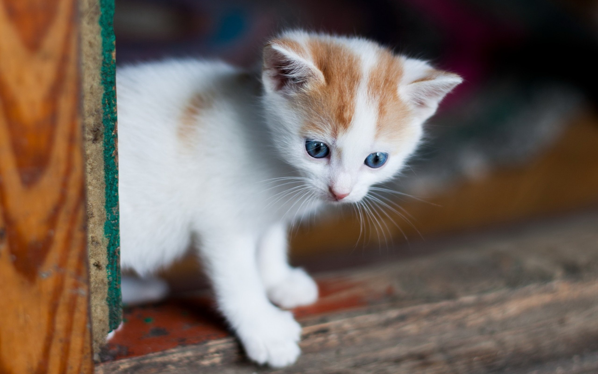
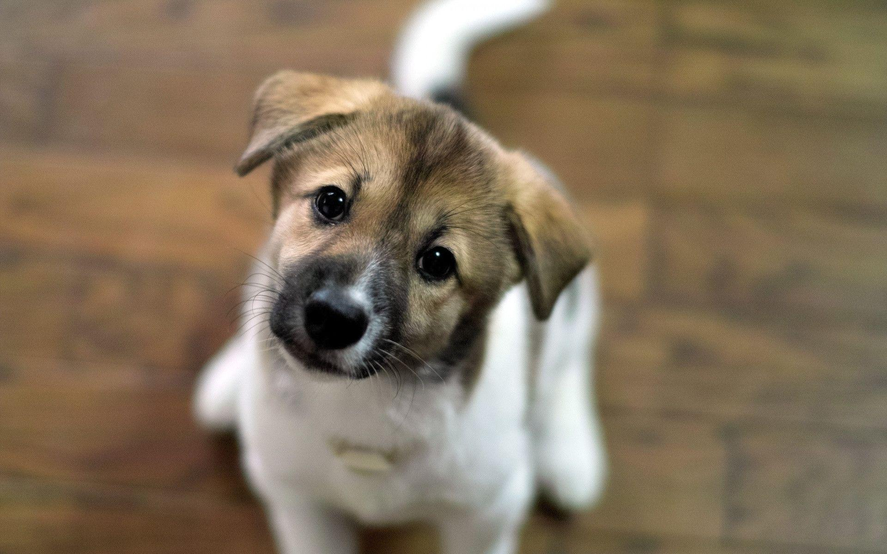
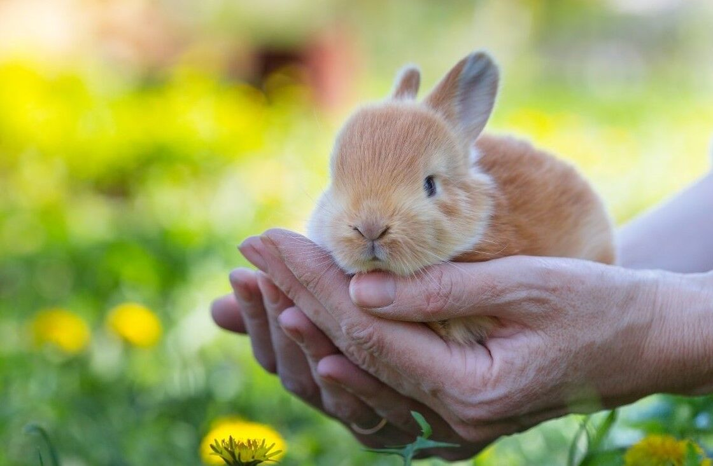

Keep Me Company!
At Come To The Rescue, we rely on our foster families. They are the backbone of our mission; for it is only in a loving home that our 'thrown away' animals learn once more how to play, how to trust and how to love. Be they gentle seniors, pregnant mamas ready to pop or rambunctious babies who just need a spot to 'hang' until adopted, all of our animals thrive under the attention of our foster families. If you are interested in volunteering as a foster family with us, please contact us!


